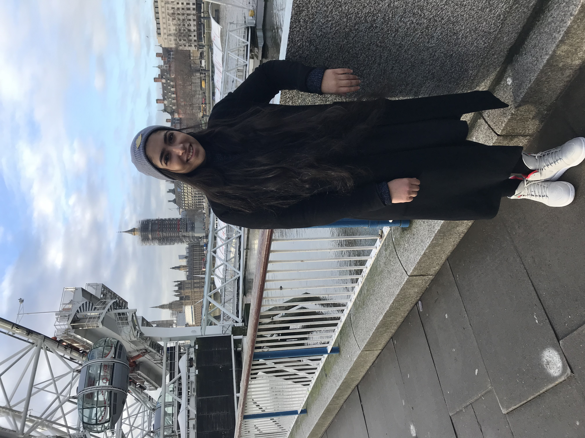

KULVEEN SARNA
The left and right brain come together rarely and people often wonder how. The simple answer is through design strategy. I use design to tell strategic stories that capture the right audience. The best way to solve business problems is to use the lens of design and iteration to find the right solution.
Follow my journey: